1. Introducción
Ámsterdam es una de las ciudades más singulares de Europa. Sus famosos canales, sus casas estrechas inclinadas, sus millones de bicicletas y una atmósfera de tolerancia y libertad la convierten en un destino fascinante.
El nombre "Ámsterdam" proviene del río Amstel y de la presa (dam) construida en el siglo XIII. La ciudad es famosa por sus museos de clase mundial (Rijksmuseum, Van Gogh, Casa de Ana Frank), sus cafeterías (coffee shops) y sus mercados flotantes. Es perfecta para recorrer a pie, en bici o en barco por sus canales (declarados Patrimonio de la Humanidad por la UNESCO).
---3. 🏨 Dónde alojarse en Ámsterdam
🏛️ Centrum (Centro) ⭐⭐⭐⭐
🎨 Jordaan ⭐⭐⭐⭐
🌿 De Pijp ⭐⭐⭐⭐
🏛️ Museumkwartier ⭐⭐⭐⭐
🌳 Oud-West ⭐⭐⭐
🏠 Oost (Barrio del este) ⭐⭐⭐
Mi recomendación personal es alojarse en Jordaan si buscas autenticidad y belleza. Si quieres estar cerca de los museos, elige Museumkwartier. Para vida nocturna y buena comida, De Pijp es perfecto. Si tu presupuesto es ajustado, Oud-West o Oost son buenas opciones.
🚲 Bicicletas en Ámsterdam: La ciudad es un paraíso para las bicis. Alquilar una bici es la mejor forma de moverse (hay carriles bici por todas partes). Las bicis de alquiler público son OV-fiets, y hay muchas tiendas de alquiler (10-15€/día).
🚋 Tranvías en Ámsterdam: GVB opera los tranvías, autobuses y metro. Compra una tarjeta OV-chipkaart o usa la tarjeta de contacto (contactless) para pagar. La Amsterdam Travel Ticket (8-20€) incluye transporte desde el aeropuerto.
🏠 Alternativas: Los apartamentos turísticos (Airbnb) son muy populares en Ámsterdam, especialmente en Jordaan y De Pijp. Los hoteles en el centro son caros, así que considera alojarte en Oud-West o Oost para ahorrar.
4. ☀️ Qué ver en Ámsterdam
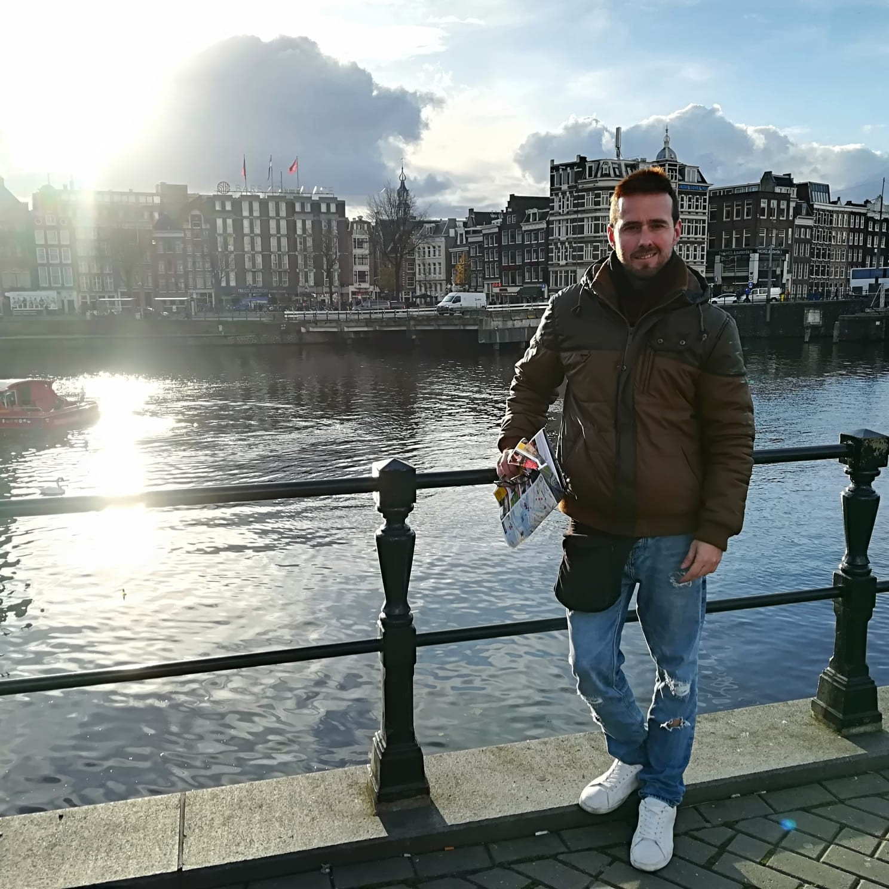
1. 🛶 Canales de Ámsterdam (Patrimonio de la Humanidad)
Los canales de Ámsterdam son el alma de la ciudad. Declarados Patrimonio de la Humanidad por la UNESCO, los cuatro canales principales (Herengracht, Keizersgracht, Prinsengracht y Singel) forman un cinturón de canales del siglo XVII.
La mejor forma de verlos es en un paseo en barco (1 hora, 10-15€). También se pueden recorrer a pie o en bici. En invierno, si los canales se congelan, se puede patinar sobre hielo (¡una experiencia única!). El atardecer es el mejor momento para las fotos.
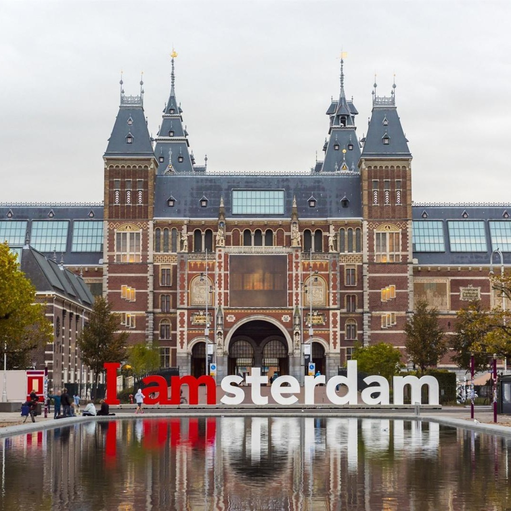
2. 🏛️ Rijksmuseum (El museo nacional de los Países Bajos)
El Rijksmuseum es el museo más importante de los Países Bajos. Alberga obras maestras del Siglo de Oro holandés, incluyendo "La ronda de noche" de Rembrandt, "La lechera" de Vermeer y autorretratos de Van Gogh.
El edificio es una obra de arte en sí mismo (neogótico, diseñado por Pierre Cuypers). La Galería de Honor (Eregalerij) es impresionante.
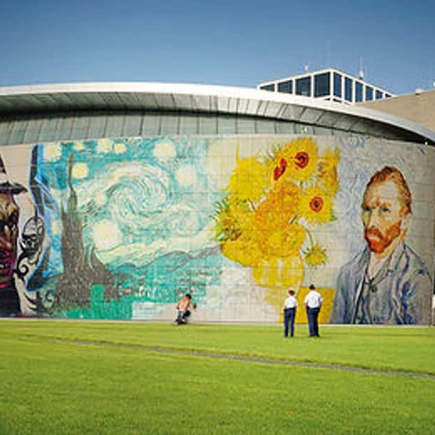
3. 🎨 Museo Van Gogh (La colección más grande del mundo)
El Museo Van Gogh alberga la colección más grande de obras de Vincent van Gogh del mundo (más de 200 pinturas, 500 dibujos y 700 cartas). Es imprescindible para los amantes del arte.
Las obras más famosas incluyen "Los girasoles", "La habitación de Van Gogh en Arlés", "El sembrador", "El almendro en flor" y autorretratos. El museo también tiene obras de sus contemporáneos (Gauguin, Monet, Toulouse-Lautrec).
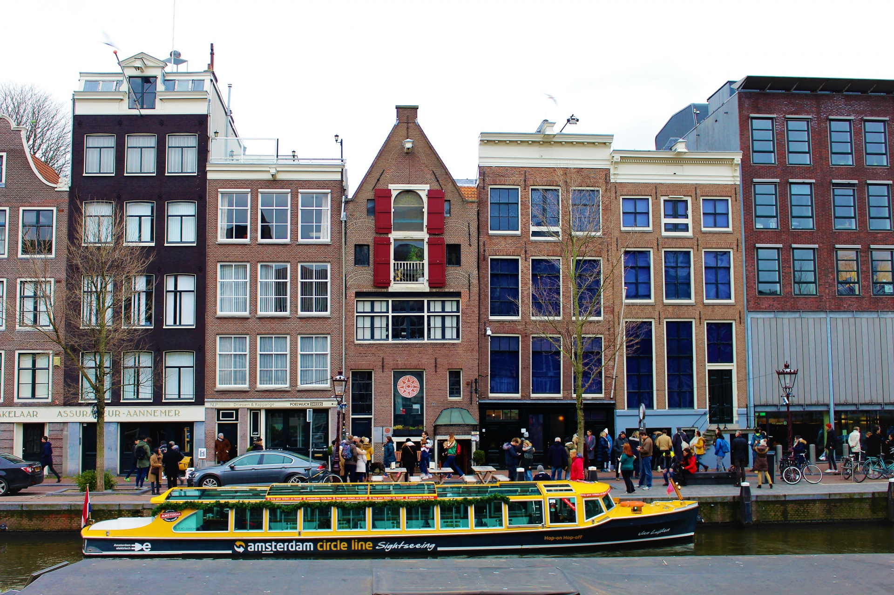
4. 🕊️ Casa de Ana Frank (El escondite donde escribió su diario)
La Casa de Ana Frank es el lugar donde Ana Frank y su familia se escondieron de los nazis durante la Segunda Guerra Mundial. Aquí escribió su famoso diario. Es un lugar emotivo y sobrecogedor.
La visita incluye el Anexo Secreto (el escondite detrás de una estantería giratoria), las habitaciones donde vivieron los ocho escondidos, y una exposición sobre la vida de Ana y la historia del Holocausto. Se conservan algunos objetos originales (el diario, fotos, carteles de películas que Ana pegó en la pared).
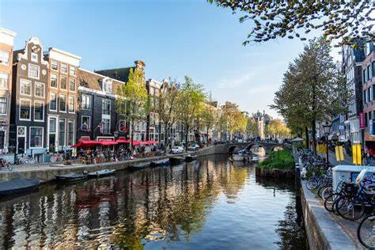
5. 🔴 Barrio Rojo (Red Light District) - Tour nocturno
El Barrio de la Luz Roja (De Wallen) es uno de los lugares más famosos (y controvertidos) de Ámsterdam. Es un barrio de canales con calles estrechas, donde la prostitución es legal y está regulada.
Las mujeres (y algunos hombres) trabajan en escaparates iluminados con luz roja. No se pueden hacer fotos (por respeto). También hay coffee shops (donde se vende marihuana), sex shops, bares, museos (Museo de la Prostitución, Museo del Cannabis) y la iglesia Oude Kerk (la más antigua de Ámsterdam).
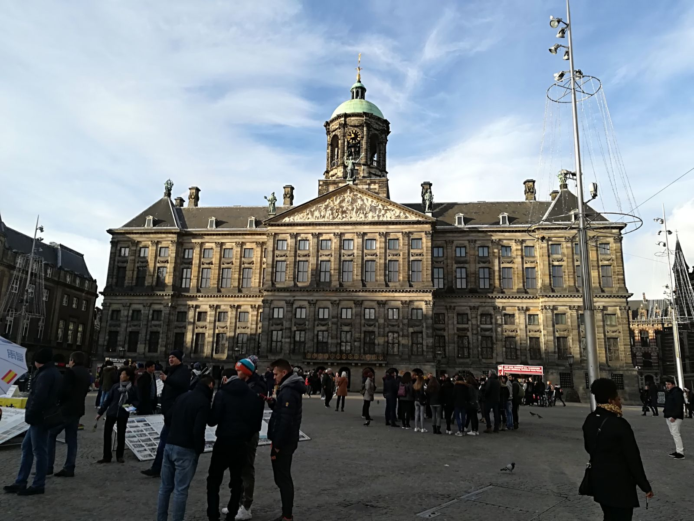
6. 🏛️ Plaza Dam y Palacio Real (El corazón de la ciudad)
La Plaza Dam (Dam Square) es la plaza más importante de Ámsterdam. Aquí se encuentra el Palacio Real (Koninklijk Paleis), el Monumento Nacional (Nationaal Monument, en memoria de las víctimas de la Segunda Guerra Mundial), la Iglesia Nueva (Nieuwe Kerk) y el gran almacén De Bijenkorf.
El Palacio Real se construyó en el siglo XVII como ayuntamiento. Es uno de los palacios oficiales del rey Guillermo Alejandro. Se puede visitar (12,50€). La fachada es impresionante.
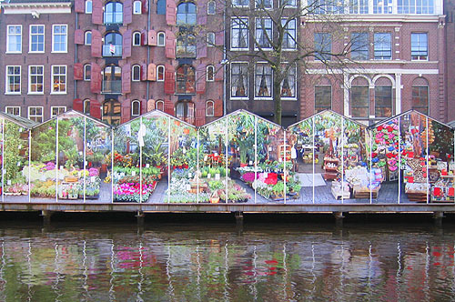
7. 🌷 Mercado de Flores Flotante (Bloemenmarkt) - El único del mundo
El Bloemenmarkt es el único mercado de flores flotante del mundo. Está situado en el canal Singel y se compone de una serie de puestos flotantes que venden tulipanes, bulbos, plantas, souvenirs y recuerdos.
Es muy turístico, pero muy bonito. Puedes comprar bulbos de tulipán para llevar a casa (asegúrate de que tienen el sello fitosanitario para poder pasar la aduana).
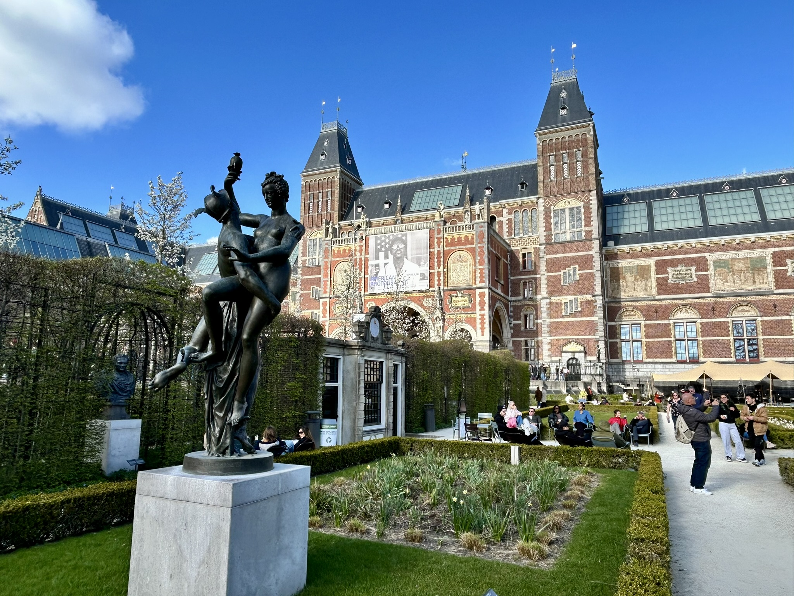
8. 🏛️ Barrio de los Museos (Museumplein) - El corazón cultural
El Museumplein es la plaza de los museos más importante de Ámsterdam. Aquí se encuentran el Rijksmuseum, el Museo Van Gogh, el Stedelijk Museum (arte moderno) y el Concertgebouw (sala de conciertos).
La plaza es enorme y tiene un estanque donde se puede patinar sobre hielo en invierno. También hay un supermercado (Albert Heijn) para comprar comida.
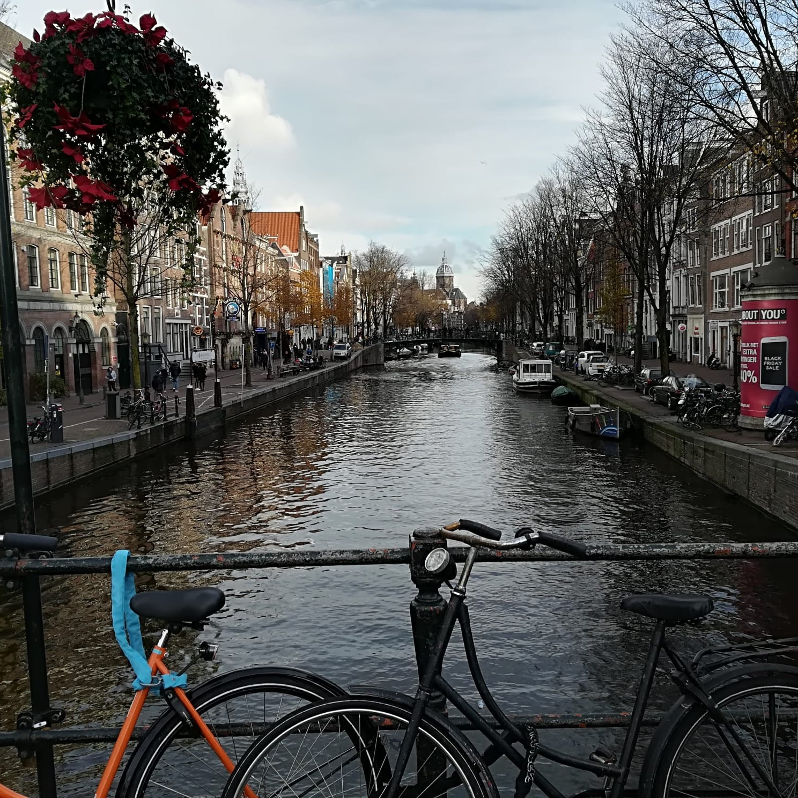
9. 🎨 Barrio de Jordaan (El barrio más bonito de Ámsterdam)
Jordaan es el barrio más auténtico y fotogénico de Ámsterdam. Calles estrechas, canales pintorescos, casas con jardines colgantes, galerías de arte, tiendas vintage, bares y restaurantes. Es el barrio favorito de los locales.
Antiguo barrio obrero (siglo XVII), ahora es uno de los más deseados. Es famoso por sus "hofjes" (patios interiores con casitas), como el Hofje van Woningen. La calle Westerstraat tiene un mercado textil (lunes). La Noordermarkt tiene un mercado de antigüedades (sábados) y un mercado ecológico (sábados).
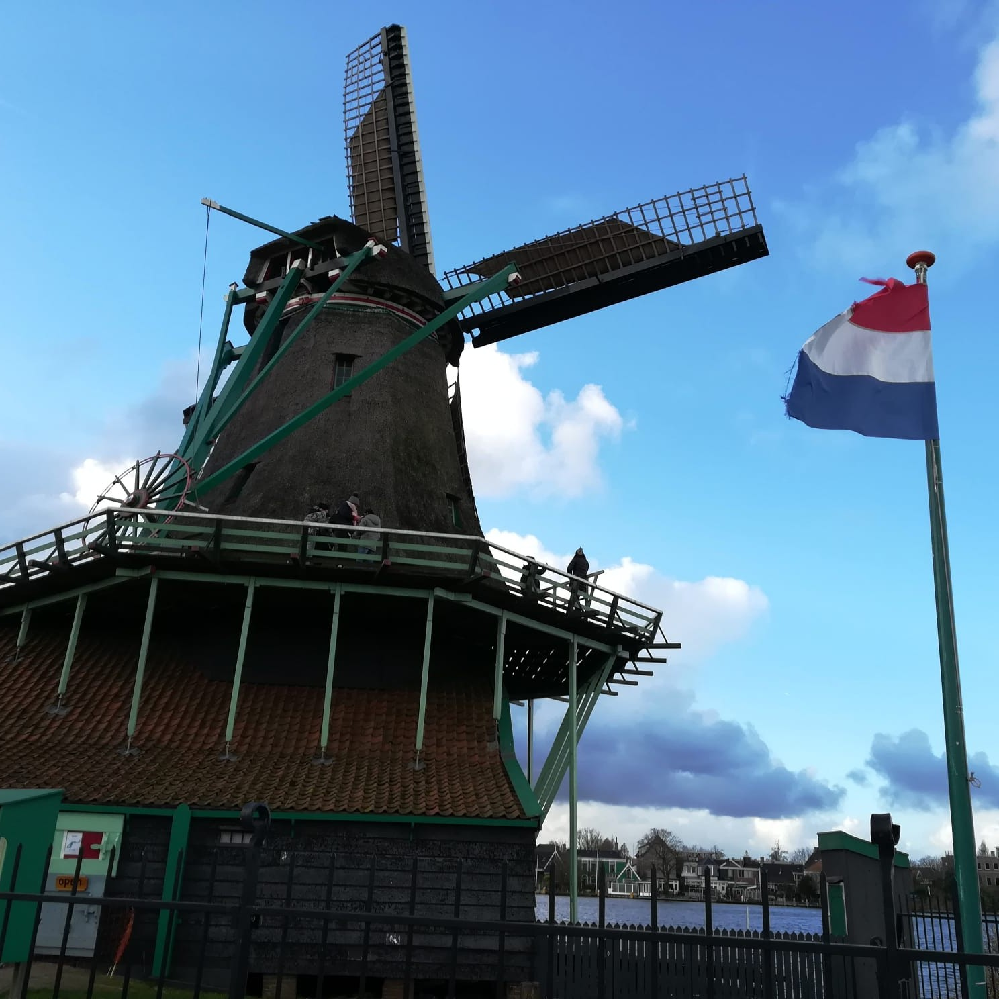
10. 🏭 Molinos de viento en Zaanse Schans (A 20 min de Ámsterdam)
Zaanse Schans es un pueblo-museo al aire libre a 20 minutos de Ámsterdam. Es famoso por sus molinos de viento del siglo XVII, sus casas de madera verdes, sus talleres artesanales (zuecos de madera, quesos) y sus canales.
Es el lugar perfecto para ver la Holanda tradicional. Puedes visitar un molino de viento por dentro (como el molino de aceite "De Zoeker", el molino de pintura "De Kat" o el molino de aserradero "Het Jonge Schaap").
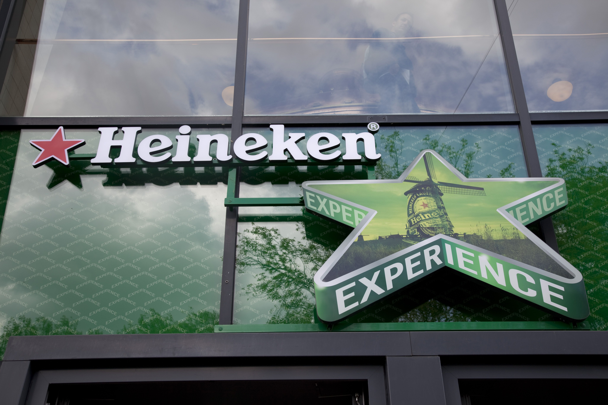
🍺 Heineken Experience (La fábrica de cerveza más famosa del mundo)
La Heineken Experience es una visita interactiva a la antigua fábrica de cerveza Heineken, fundada en 1864. Es una de las atracciones más populares de Ámsterdam. La visita te lleva por un recorrido de 1,5 horas donde descubrirás la historia de la marca, el proceso de elaboración de la cerveza, y podrás ver las antiguas máquinas de cocción y fermentación.

⚽ Estadio del Ajax (Johan Cruijff ArenA) - El templo del fútbol holandés
El Johan Cruijff ArenA es el estadio del AFC Ajax, el equipo de fútbol más famoso de los Países Bajos. Inaugurado en 1996, tiene capacidad para 55.000 espectadores. Es un estadio moderno con un diseño espectacular y una cubierta que se puede cerrar. Fue sede de la final de la Eurocopa 2000 y de la final de la Europa League 2017.
Ámsterdam es una ciudad muy segura y fácil de recorrer. El tranvía y la bici son los mejores medios de transporte. La tarjeta "I Amsterdam City Card" (24-120h) incluye entrada a muchos museos y transporte público gratuito.
Si quieres ver tulipanes, visita Keukenhof (a 40 min de Ámsterdam) en primavera (marzo-mayo). Es el jardín de flores más grande del mundo.
Los coffee shops son legales, pero ten cuidado: no puedes fumar en la calle (solo en los coffee shops). La hierba es potente, así que ve con cuidado si no estás acostumbrado.

{kind=link}
{kind=link}
{kind=link}
{kind=link}
{kind=link}
{kind=link}
{kind=link}
{kind=link}
{kind=link}
{kind=link}
{kind=link}
{kind=link}
{kind=link}
{kind=link}
{kind=link}
{kind=link}
{kind=link}
{kind=link}
{kind=link}